Überblick#
I never wrote things down to remember; I always wrote things down so I could forget.
— Matthew McConaughey
Folien/PDF#
Vorstellung#
Prof. Dr.-Ing. habil. Jörn Plönnigs
KI für Digitales Bauen
Büro: Justus-von-Liebig-Weg 2, Raum 114
Email: Joern.Ploennigs@uni-rostock.de
Telefon: 0381 498-3500
Zielsetzung#
Verständnis und Kenntnisse der Grundlagen der Programmierung und Datenbanken aneignen
Aneignen praktischer Fähigkeiten, um ingenieurtechnische Probleme mit Software zu lösen
Kennenlernen aktueller Ansätze und Technologien in Softwareentwicklung
Themen#
Ablauf#

Übungen#
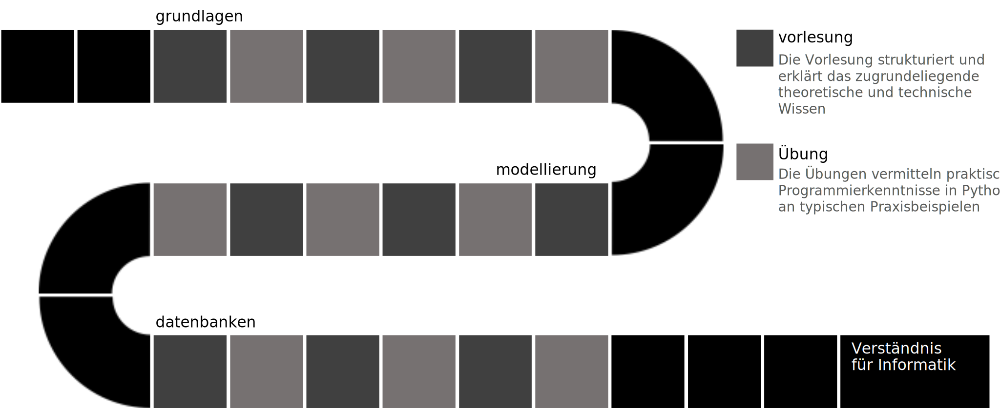
Vorlesungsfolien#
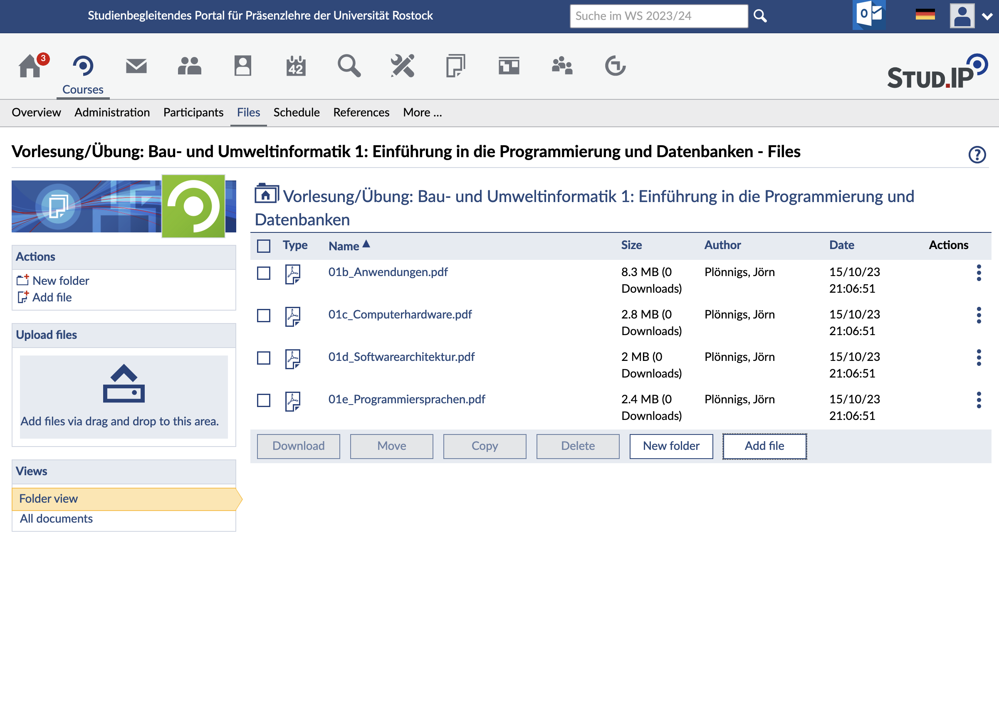
Vorlesungsdokumentation#
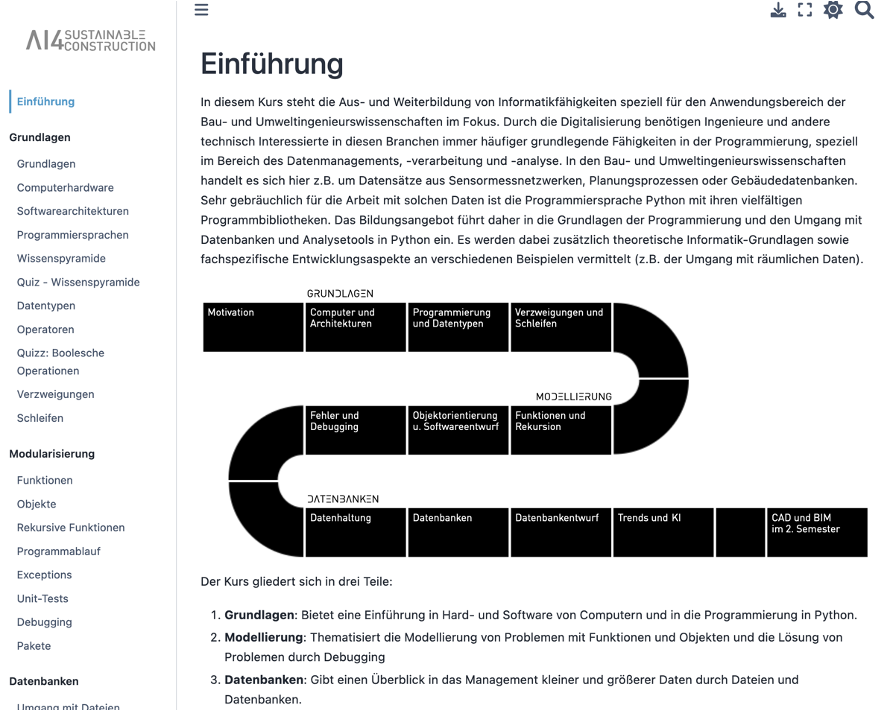
Übungen#
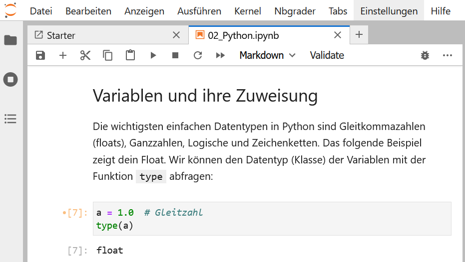
Ab nächster Woche
Konsultation (PC-Pool 1) Mittwoch 11:15 - 12:45 Uhr
Digitale Übung:
Online Umgebung
Übungsvideos
Übung#
Vorstellung#
Dr.-Ing. Markus Berger
KI für Digitales Bauen
Büro: Justus-von-Liebig-Weg 2, Raum 107
Email: Markus.Berger@uni-rostock.de
Telefon: 0381 498-3503
Zielsetzung#
In der Vorlesung gelernte Programmierkonzepte
wiederholt praktisch anwenden
auf andere Probleme beziehen
Zielsetzung 2#
Warum Programmieren lernen als Ingenieur?
Verständnis der Grundelemente des Programmierens
Kenntnis der üblichen Schritte in einem Softwareprojekt
Erfahrung mit dem Suchen nach Lösungen
Strategien Erlernen wie Probleme behandelt werden können
Im späteren Verlauf: Die Systematik hinter Software verstehen.
Grundlagen aneignen - von denen aus weitergearbeitet werden kann!
Ablauf - Zwei Teile#
Übungsvideo
Ansehen
Selbst mitprogrammieren um die Ansätze zu Erlernen
Aufgabe
Eigene Lösungen überlegen oder recherchieren
Beide Teile müssen abgegeben werden!
Gruppenarbeit ist nicht vorgesehen!
Konsultation#
Fragen an: Markus Berger
Betreuung von Abgaben: Clemens Kujat (Hilfskraft)
Ab nächster Woche
Mittwoch 11:15–12:45 Uhr in PC-Pool 1 und über Zoom
Klären von Fragen zu den Videos und den Aufgaben
Markus.Berger@uni-rostock.de
Clemens.kujat@uni-rostock.de
Abgabe#
Übungsvideos:
Veröffentlichung immer Dienstags
Konsultation immer Mittwochs
Abgabe immer Montags
Prüfungszulassung#
Hausaufgaben werden nicht benotet
Bewertet stattdessen mit Erfüllt / Nicht-Erfüllt der Aufgabe (Pro gesamter Übung, keine Teilleistungen)
Am Ende des Semesters müssen mindestens 50% der Übungen erfüllt sein
Umfangreichere Aufgaben bringen dabei mehr Prozente
Thema |
Gewichtung |
|---|---|
Grundlagen |
|
Python & Datentypen |
5% |
Operatoren, Verzweigungen & Schleifen |
5% |
Funktionen & Objekte |
5% |
Algorithmen |
5% |
Erweitertes |
|
Fehler & Tests |
15% |
Entwurf |
15% |
Datenhaltung |
20% |
Erweitertes |
|
Datenbankanfragen |
15% |
Datenbankentwurf |
15% |
Online Python IDE - Jupyter Books#
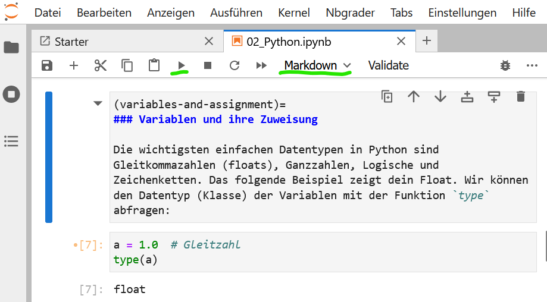
Anmeldung bei Jupyter & Abgabe#
Account erstellen in der nächsten Woche unter:
https://ml-lab.ai4sc-lectures.auf.uni-rostock.de/Mit folgendem Nutzernamen: „vorname_nachname“
Einführung dann im ersten Übungsvideo
Hinweis: KI#
Mächtige Tools für die Programmierung – wenn man weiß wie man sie benutzt
Grundverständnis von Python hilft enorm bei der Benutzung dieser Tools
Am Ende eine Extra-Vorlesung + Übung dazu
Aber: Während der Klausur müsst ihr signifikantes Programmierverständnis zeigen, also sind die Übungen unbedingt selbst zu erfüllen!
Hausaufgaben#
Abrufen von Aufgaben#
Hausaufgaben können auf der JupyterLab-Plattform herunterladen, bearbeiten und abgeben werden
Menüpunkt
Nbgrader/Assignments→ wichtigste Option, zeigt die Seite mit den AufgabenMenüpunkt
Nbgrader/Courses→ listet alle belegten KurseMenüpunkt
Nbgrader/Formgrader→ nur für Lehrende, zum Einsehen und Bewerten der studentischen Abgaben
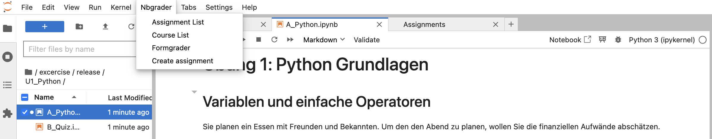
Menüpunkt
Nbgrader/Assignments→ Ansicht der aktuellen Aufgaben öffnet sichMit „fetch“ → ausgewählte Aufgabe herunterladen
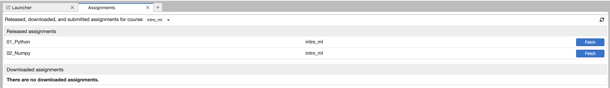
Nach dem Herunterladen erscheint die Aufgabe in der Liste „Downloaded Assignments“
Klick auf den blauen Aufgabennamen → öffnet den Unterordner der Aufgabe
Im Unterordner: alle Notebooks und zugehörigen Dateien sichtbar
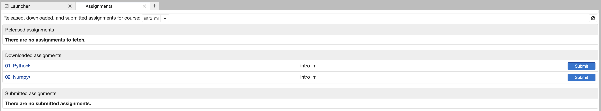
Bearbeiten von Aufgaben#
Lesen sie die Aufgabenstellung durch
Ersetzen Sie
YOUR CODE HEREmit richtigem CodeErsetzen Sie
YOUR ANSWER HEREmit einer TextantwortLöschen sie ggf.
raise NotImplementedError().Führen sie die Zelle mit
Shift+Enteraus.Achten Sie darauf, dass die Ausführung erfolgreich war.
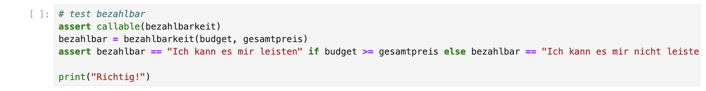
Auf jede zu ergänzende Code-Zelle folg eine Test-Zelle.
Diese können Sie nicht bearbeiten.
Aber die Ausführung zeigt Ihne ob sie richtig lagen.
Einreichen von Aufgaben#
Vor Abgabe jedes Notebook validieren
Schaltfläche im Menü zum Starten der
ValidierungverwendenErfolgreiche Validierung → Meldung: “Success! Your notebook passes all the tests.”
Fehlgeschlagene Validierung → Bericht mit den aufgetretenen Fehlern wird angezeigt
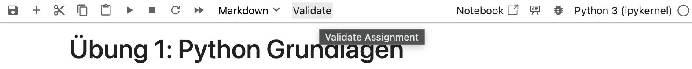
Nach erfolgreicher Validierung aller Notebooks → Schaltfläche „Submit“ betätigen
Aufgabe wird eingereicht
Eingereichte Aufgabe erscheint in der Liste „Submitted Assignments“
Server herunterfahren#
JupyterLab-Umgebung ordnungsgemäß beenden, wenn die Arbeit abgeschlossen ist
Über Menüpunkt
File/Hub Control Panelin die Serverkontrollansicht wechselnServer mit
Stop my Serverbeenden
Motivation#
Entwurf: CAD - Computer Aided Design#
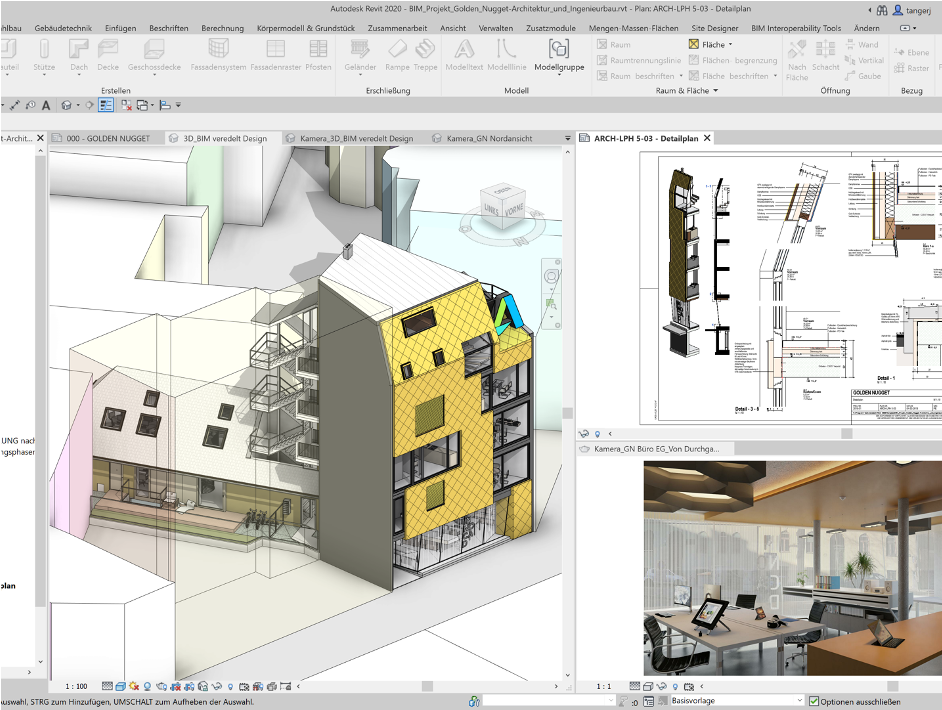
Software-Anwendungen zum Entwerfen, Konstruieren und Präsentieren von Konstruktionszeichnungen und Karten, sowohl für 2D- als auch für 3D-Modelle. (SoftSelect Glossar / Lexikon)
Entwurf: Virtuelle Umgebungen#
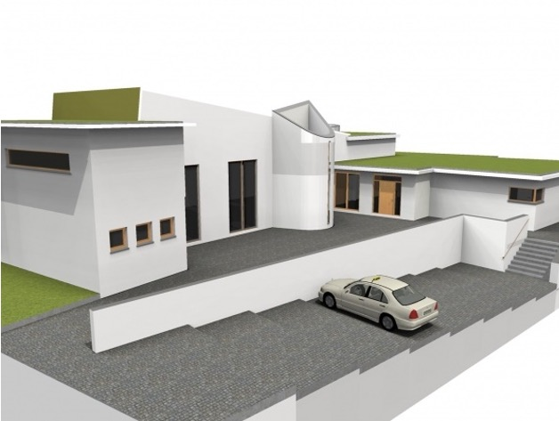
Entwurf: Tragwerksplanung#
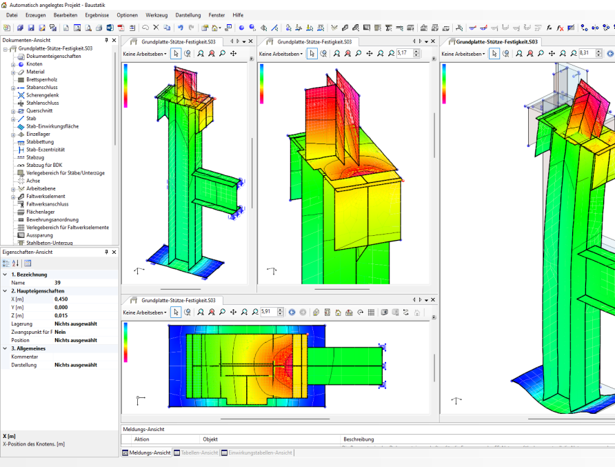
Ziel seiner Tragwerksplanung ist es, die erforderliche Tragfähigkeit und Gebrauchstauglichkeit einer Baukonstruktion während der vorgesehenen Lebensdauer mit den Forderungen nach Wirtschaftlichkeit und Ästhetik in Einklang zu bringen. DeWiki
Bau: Bauprozessautomatisierung#
Automatisierung verschiedener Schritte
Bautagebuch
Bauzeitenmanagement
Bauprojektmanagement
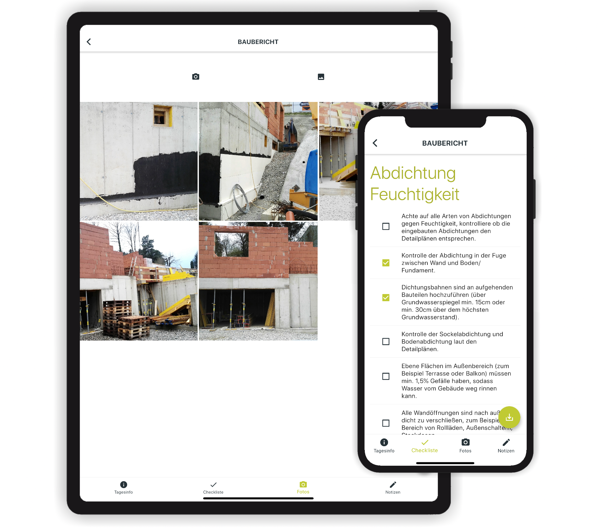
Bau: Baurobotik#
Das Einsatzgebiet von Robotern im Bauhauptgewerbe ist grundsätzlich unabhängig vom bauspezifischen Geschäftsmodell bzw. unabhängig vom Segment, der Aktivität und der eigentlichen Arbeitstätigkeiten.
Betrieb: GIS - Geoinformationssystem#
Geoinformationssysteme sind Informationssysteme zur Erfassung, Bearbeitung, Organisation, Analyse und Präsentation räumlicher Daten. DeWiki

Betrieb: Gebäudeautomation#
Gesamtheit von Überwachungs-, Steuer-, Regel- und Optimierungseinrichtungen in Gebäuden. DeWiki
Betrieb: CAFM - Computer Aided Facility Management#
Facilitymanagement bezeichnet die Verwaltung und Bewirtschaftung von Gebäuden sowie deren technischen Anlagen und Einrichtungen (englisch facilities). CAFM ist die Unterstützung des Facilitymanagements durch ein Computerprogramm. DeWiki
Literaturempfehlungen#
Python 3: das umfassende Handbuch; Ernesti, Johannes, Kaiser, Peter, 2020
Datenbanken: Konzepte und Sprachen; Saake, Gunter, Sattler, Kai-Uwe, Heuer, Andreas, 2018
Empfehlung: Verschiedene Online-Tutorials nutzen! https://docs.python.org/3/tutorial/ & https://www.w3schools.com/python/
Langfristig am wichtigsten: Ins kalte Wasser springen!